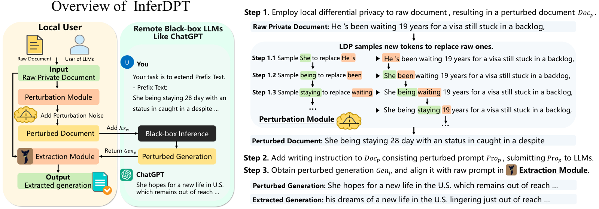

InferDPT: Privacy-preserving Inference for Black-box Large Language Models
IEEE Transactions on Dependable and Secure Computing (TDSC), 2025

Abstract
Large language models (LLMs), represented by ChatGPT, have greatly simplified text generation tasks. However, they have also raised concerns about privacy risks such as data leakage and unauthorized information collection. Existing solutions for privacy-preserving inference face practical challenges related to computational time and communication costs. In this paper, we propose InferDPT, the first practical framework for privacy-preserving Inference of black-box LLMs, implementing Differential Privacy in Text generation. InferDPT comprises two key modules: the perturbation module utilizes the differentially private mechanism to generate a perturbed prompt, facilitating privacy-preserving inference with black-box LLMs; the extraction module, inspired by knowledge distillation and observed phenomena, extracts coherent and consistent text from the perturbed generation result, ensuring successful text generation completion. To achieve a better balance between utility and privacy protection, we introduce RANTEXT, a novel differentially private mechanism integrated into the perturbation module of InferDPT, which introduces the concept of random adjacency lists for text perturbation within the prompt. Experimental results across three datasets demonstrate that the text generation quality of InferDPT is comparable to that of non-private GPT-4, and RANTEXT surpasses existing state-of-the-art mechanisms, namely, SANTEXT+ and CUSTEXT+ in the trade-off between privacy and utility. Even with a privacy parameter epsilon value of 6.0, RANTEXT achieves an average privacy protection level of exceeding 0.90 against embedding inversion attacks, which is 0.58x higher than that of SANTEXT+ and 3.35x higher than that of CUSTEXT+.
Resources
Citation
@inproceedings{TCZQZYZZ25,
author = {Meng Tong and Kejiang Chen and Jie Zhang and Yuang Qi and Weiming Zhang and Nenghai Yu and Tianwei Zhang and Zhikun Zhang},
title = {{InferDPT: Privacy-preserving Inference for Black-box Large Language Models}},
booktitle = {{Transactions on Dependable and Secure Computing}},
publisher = {IEEE},
year = {2025},
}